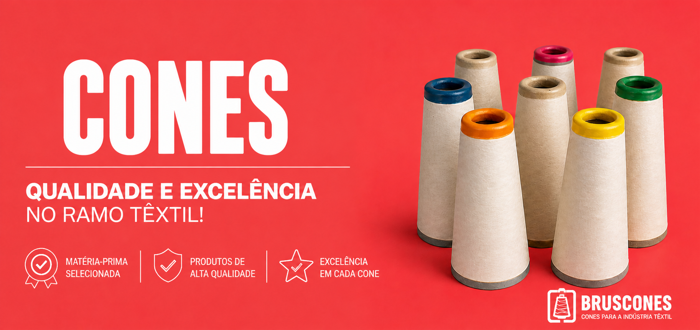
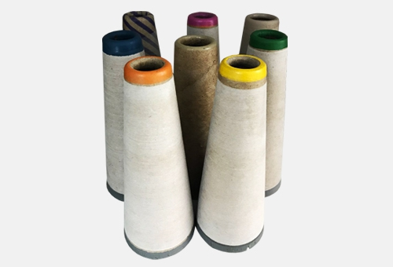
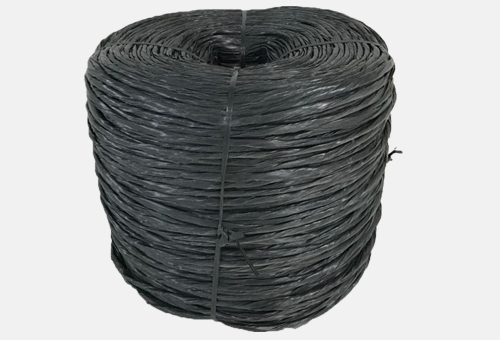
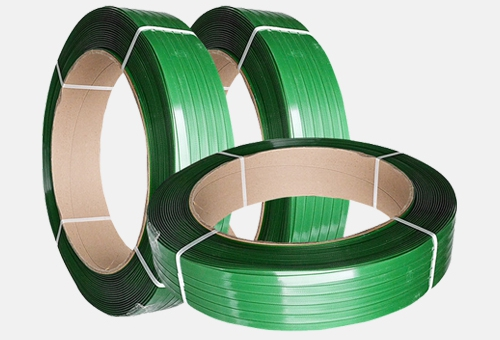

Atendendo todo o Brasil com resistência e qualidade.

Cones reciclados de papelão nos tamanhos 4°20’ e 5°57’, reto ou virolado, com reserva ou picote, personalizado nas cores de acordo com a solicitação do cliente.

Fitilho retorcido BT, é utilizado para amarrar materiais que são prensados (fardos). Devido sua resistência à tensão, em algumas aplicações, pode vir a substituir fita de aço, arame e sisal. Produzido em PP (polipropileno) o fitilho torcido, é indicado para volumes pesados e frequentemente utilizado em prensas.

Produtos pesados, pallets, materiais de difícil lacração, necessitam de fitas com alto índice de resistência. As fitas de arqueação plástica em poliéster (PET) são ideais para estas aplicações.
A Bruscones é uma empresa familiar, com gestão orientada em resultado e que tem desenhado um caminho de sucesso, se consolidando no mercado desde sua fundação em 1994. Fabricamos cones e fitilhos para a indústria têxtil. A matéria-prima utilizada pode ser desde cartões reciclados até papéis vindos de celulose virgem. Alicerçada em princípios éticos, a Bruscones é uma empresa comprometida com você, cliente, buscando sempre ser uma solução na aplicação de conicais. Através de investimentos constantes na busca de novas tecnologias, no desenvolvimento e capacitação de seus funcionários e no aperfeiçoamento contínuo do processo de fabricação, buscando a melhoria da qualidade do produto e dos serviços prestados.
Preocupada com o desenvolvimento sustentável, a Bruscones desenvolve ações em prol do meio ambiente. Grande parte de nossos produtos são fabricados utilizando matéria-prima proveniente de reciclagem. Desta forma, substituindo a matéria-prima virgem, contribuímos para uma destinação ambientalmente correta do papel, além de estimular o mercado de reciclagem, gerando desenvolvimento social e ambiental. Acreditamos que a reciclagem é uma das alternativas para o tratamento do lixo e contribui diretamente para a conservação do meio ambiente. Com a reciclagem, o lixo é tratado como matéria-prima que é reaproveitada para fazer novos produtos e traz benefícios para todos, através da diminuição da quantidade de lixo enviada a aterros sanitários, diminuição da extração de recursos naturais, melhoria na limpeza da cidade e aumento da conscientização da sociedade em respeito ao destino do lixo.